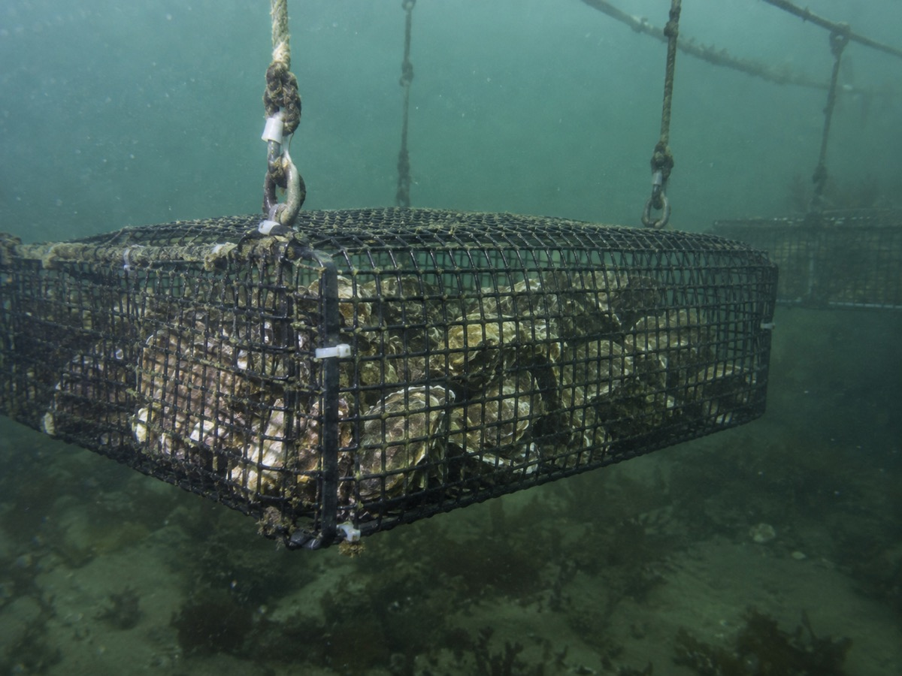

Underwater farm intelligence
Know where your crew should go first.
Set up your farm and see a sample zone-by-zone scan report with oyster health, stock estimates, visible risks, and a practical crew plan.
See the whole leaseA clear health signal for every growing zone.
Find problems soonerFlag possible mortality, fouling, and gear issues.
Leave with a planTurn findings into two concrete crew priorities.

Build your sample
Tell us about your farm
No account needed. This takes about 30 seconds.
Building sample scan
Mapping your growing zones…
Creating realistic sample conditions for your farm.
Latest farm scan
Simulated dataFarm scan report
· ·
Farm overview
What the sample scan found
Recommended route
Where your crew should go first
Built around your work window.
Cage-by-cage review
See every cage clearly
Choose a zone, then open any cage for its full detection evidence and response plan.
Detection playbook
What the system noticed—and how
Visible signals become explainable flags, not black-box diagnoses.
Scan evidence
Zone-by-zone report
Each finding includes a visible cue and a concrete next step.
One honest question
Would this help you plan a real inspection?
If a report like this used real images from your lease, would you take a next step toward testing it?